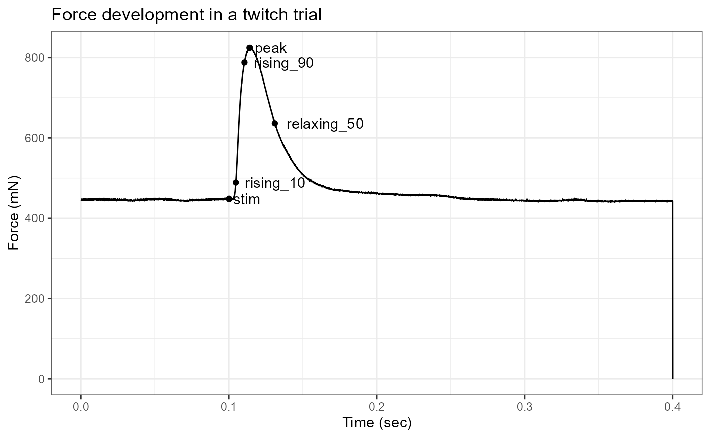
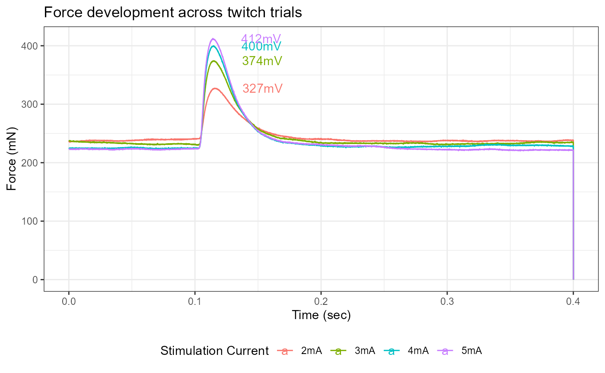

Plotting data in workloopR
Shreeram Senthivasan
2019-10-19
Source:vignettes/Plotting-workloopR.Rmd
Plotting-workloopR.RmdLet’s take a look at plotting data stored in objects created by workloopR!
Loading packages and data
## If a package is installed, it will be loaded. If any are not, the missing
## package(s) will be installed from CRAN and then loaded.
## First specify the packages of interest
packages <-
c("workloopR",
"magrittr",
"dplyr",
"tidyr",
"purrr",
"ggplot2",
"viridis")
## Now load or install&load all
package.check <- lapply(
packages,
FUN = function(x) {
if (!require(x, character.only = TRUE)) {
install.packages(x, dependencies = TRUE,
repos = "http://cran.us.r-project.org")
library(x, character.only = TRUE)
}
}
)
Plotting workloop objects
Working with single files
Let’s start by visualizing the raw traces in our data files, specifically position, force, and stimulation over time.
workloop_dat<-
system.file(
"extdata",
"workloop.ddf",
package = 'workloopR') %>%
read_ddf(phase_from_peak = TRUE) %>%
fix_GR(2)# To overlay position and force, we need them to be on comparable scales
# We will then use two y-axis to make the units clear
scale_position_to_force <- 3000
workloop_dat %>%
# Set the x axis for the whole plot
ggplot(aes(x = Time)) +
# Add a line for force
geom_line(aes(y = Force, color = "Force"),
lwd = 1) +
# Add a line for Position, scaled to approximately the same range as Force
geom_line(aes(y = Position * scale_position_to_force, color = "Position")) +
# For stim, we only want to plot where stimulation happens, so we filter the data
geom_point(aes(y = 0, color = "Stim"), size = 1,
data = filter(workloop_dat, Stim == 1)) +
# Next we add the second y-axis with the corrected units
scale_y_continuous(sec.axis = sec_axis(~ . / scale_position_to_force, name = "Position (mm)")) +
# Finally set colours, labels, and themes
scale_color_manual(values = c("#FC4E2A", "#4292C6", "#373737")) +
labs(y = "Force (mN)", x = "Time (secs)", color = "Parameter:") +
ggtitle("Time course of \n work loop experiment") +
theme_bw() +
theme(legend.position = "bottom", legend.direction = "horizontal")
Next, we would select cycles from the workloop in preparation for analysis. Before we do this, let’s keep all the cycles and visualize how select_cycles() splits the data. Note that you can include 0 in the keep_cycles argument to include data that is categorized as being outside of a complete cycle. This assigns a single cycle label (a) to the data before and after the complete cycles.
# Let's calculate x and y positions to add labels for each cycle
workloop_dat<-
workloop_dat %>%
select_cycles('lo', 0:6)
label_dat<-
workloop_dat %>%
group_by(Cycle) %>%
summarize(
x = mean(Time)
) %>%
# And add another row for the incomplete cycles at the beginning
bind_rows(data.frame(
Cycle = 'a',
x = 0))
workloop_dat %>%
ggplot(aes(x = Time, y = Position, colour = Cycle)) +
geom_point(size=1) +
geom_text(aes(x, y=2.1, colour = Cycle, label = Cycle), data = label_dat) +
labs(y = "Position (mm)", x = "Time (secs)") +
ggtitle("Division of position\nby `select_cycles()`") +
theme_bw() +
theme(legend.position = "none")
Visualizing the cycles is a highly recommended in case noise before or after the experimental procedure is interpreted as a cycle.
Let’s go ahead and use cycles 2 to 5 (labeled c-f in the previous plot). Note however that the cycle labels will be reassigned from a-d when we subset the data.
Now let’s plot some work loops!
# Let's start with a single cycle using colour to indicate time
workloop_dat %>%
filter(Cycle == 'a') %>%
ggplot(aes(x = Position, y = Force)) +
geom_path(aes(colour = Time)) +
labs(y = "Force (mN)", x = "Position (mm)", colour = "Time (sec)") +
ggtitle("Single work loop") +
theme_bw() +
theme(legend.position = "bottom", legend.direction = "horizontal")
# Now let's see how the work loop changes across cycles
# We can use arrows to indicate direction through time
workloop_dat %>%
ggplot(aes(x = Position, y = Force)) +
geom_path(aes(colour = Cycle), arrow=arrow()) +
labs(y = "Force (mN)", x = "Position (mm)", colour = "Cycle index") +
ggtitle("Work loops by cycle index") +
theme_bw() +
theme(legend.position = "bottom", legend.direction = "horizontal")
Working with single files
Working with multiple files is a little trickier as multiple the data are stored in separate data.frames organized into a list. The easiest way to deal with this issue is to add a column specifying the file id and concatenating the data together. Refer to the “Batch processing” vignette for more information on working with multiple files.
multi_workloop_dat<-
system.file(
"extdata/wl_duration_trials",
package = 'workloopR') %>%
read_ddf_dir(phase_from_peak = TRUE) %>%
map(fix_GR, 2) %>%
map(select_cycles,'p2p', 4) %>%
map(analyze_workloop)
# Summarize provides a quick way to pull out most experimental parameters, etc
multi_workloop_dat %>%
summarize_wl_trials %>%
ggplot(aes(Stimulus_Pulses, Mean_Power)) +
geom_point() +
labs(y = "Mean Power (W)", x = "Stim Duration (pulses)") +
ggtitle("Mean power over trial\nby stimulus duration") +
theme_bw() +
theme(legend.position = "bottom", legend.direction = "horizontal")
# Accessing the time course data requires more manipulation
multi_workloop_dat %>%
map(~ mutate(.x$cycle_a, stim_pulses = attr(.x, "stimulus_pulses"))) %>%
bind_rows %>%
ggplot(aes(Percent_of_Cycle, Inst_Power)) +
geom_path(aes(colour = as.factor(stim_pulses)))+
labs(y = "Power (W)", x = "Percent of Cycle", colour = "Stim Duration") +
ggtitle("Time course of instantaneous\npower by stimulus duration") +
theme_bw() +
theme(legend.position = "bottom", legend.direction = "horizontal")
#> Warning: Removed 3 rows containing missing values (geom_path).
Plotting isometric objects
Working with single files
One useful visualization with isometric data is annotating peak force and other timing points. With a single file and multiple set points, some manipulation is useful to make annotating a little cleaner.
twitch_dat<-
system.file(
"extdata",
"twitch.ddf",
package = 'workloopR') %>%
read_ddf() %>%
fix_GR(2)
# We now need to reshape the single row into three columns, a label for the point, an x value for the label (time), and a y value (force). See the `tidyr` package and associated vignettes on reshaping tips
label_dat<-
twitch_dat %>%
isometric_timing(c(10,90),50) %>%
gather(label, value) %>%
filter(label != 'file_id') %>%
separate(label, c("type", "identifier"), "_", extra="merge") %>%
spread(type,value)
label_dat$time<-as.numeric(label_dat$time)
label_dat$force<-as.numeric(label_dat$force)
ggplot() +
geom_line(aes(Time, Force), data = twitch_dat) +
geom_point(aes(time, force), data = label_dat) +
geom_text(aes(time, force, label = identifier), hjust=-0.15, data = label_dat) +
labs(y = "Force (mN)", x = "Time (sec)") +
ggtitle("Force development in a twitch trial") +
theme_bw() +
theme(legend.position = "bottom", legend.direction = "horizontal")
Working with multiple files
We can also overlay data from multiple isometric trials to see how force evolves across trials. Please see the “Batch processing” vignette for more details on how to work with multiple files.
multi_twitch_dat<-
system.file(
"extdata/twitch_csv",
package = 'workloopR') %>%
list.files(full.names = T) %>%
map(read.csv) %>%
map2(c("2mA","3mA","4mA","5mA"), ~as_muscle_stim(.x, type = 'twitch', file_id = .y))
# Next we want another data.frame of label data
multi_label_dat<-
multi_twitch_dat %>%
map_dfr(isometric_timing) %>%
select(file_id, ends_with("peak")) %>%
mutate(label = paste0(round(force_peak),"mV"))
# Once again we want the data in a single data.frame with a column for which trial it came from
multi_twitch_dat %>%
map_dfr(~mutate(.x, file_id = attr(.x, "file_id"))) %>%
ggplot(aes(x = Time, y = Force, colour = file_id)) +
geom_line() +
geom_text(aes(time_peak, force_peak, label = label), hjust=-0.7, data = multi_label_dat) +
labs(y = "Force (mN)", x = "Time (sec)", colour = "Stimulation Current") +
ggtitle("Force development across twitch trials") +
theme_bw() +
theme(legend.position = "bottom", legend.direction = "horizontal")
Please note that these twitch trials have differing values of initial force, so actual force developments are not identical to peak forces.